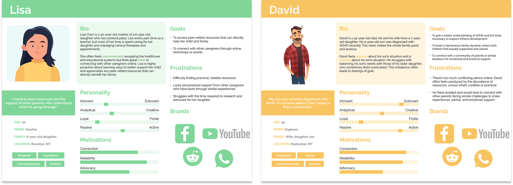
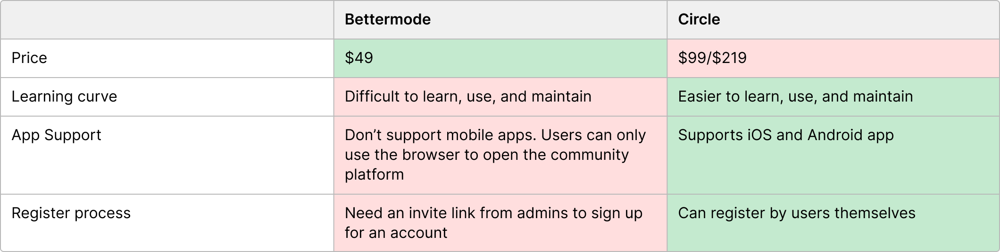
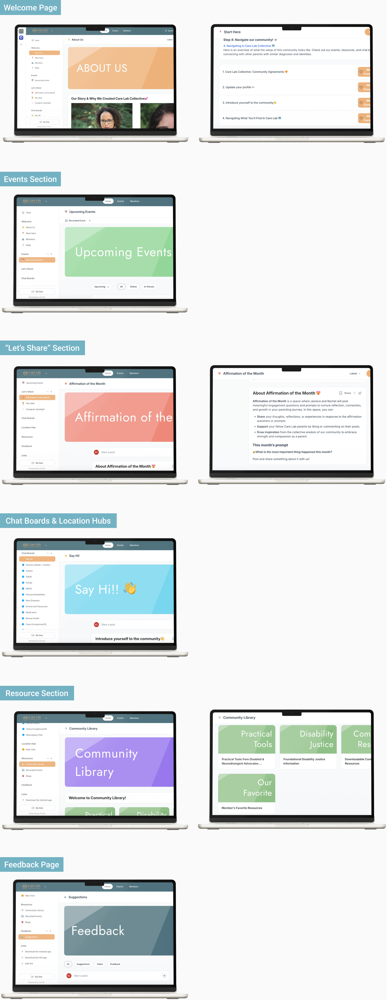
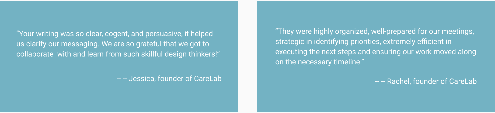

A partnership with CareLab Collective, a community platform where parents and caregivers of neurodivergent and disabled children can find resources, support, and connection.
09/2024 – 12/2024 (4 months)
UX Designer
Our clients, Jessica Mingus and Rachel Henes, have been caregivers for a long time. They have both been co-moderators of a local peer support group for parents of neurodiversity and disabled kids, which has been a lifeline for hundreds of families in our hometown. Jessica started the group in the depths of the COVID lockdown, which quickly became a community of parents. Over time, the group became a vibrant hub for over 400 families.
CareLab Collective approached us with the goal of transforming their local support group into a digital platform. They needed:
This collaboration aims to ensure the platform provides meaningful support to caregivers everywhere.
We believe no one should feel alone in their caregiving journey. For CareLab Collective, we aim to:
Our clients have conducted user research, including 2 interviews and a survey with 36 responses. We visualized the interview data and created an affinity map. Through this, we could see caregivers need access to services and support in navigating system and bureaucracy, balancing diverse needs of children, school and education challenges, transition to adulthood, and emotional and mental well-being.

We created two personas to represent different types of users. We have users of various identities. For example, new parents, parents who are new to services or diagnosis, veteran parents with experience, and parents who come to new stages of the journey.
Due to budget considerations, the customer initially intended to use Bettermode as the platform for Care Lab Collective. However, after we conducted a comparative analysis of the supporting platforms including Bettermode, Circle and Mighty, and their different plans, we concluded that circle did a better job in terms of learning curve, app support and registration process. Even though it is more expensive, it will save our customers a lot of learning and maintenance costs in the long run.
After choosing Circle as the platform, our next step was to integrate the desired features gradually. Leveraging Circle’s intuitive design interface, we implemented the client’s requirements without the need for coding. During this phase, we translated the client’s needs into functional designs, bringing the community’s framework to life. The design focused on simplicity while fostering an atmosphere of warmth and care, ensuring the platform provided a safe, welcoming, and user-friendly experience for the community.

COMMENTS
